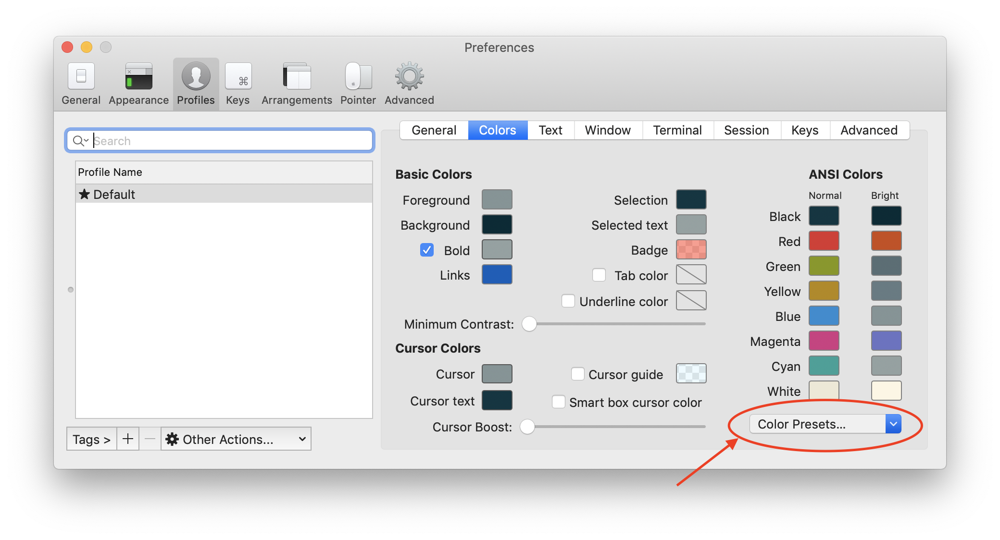

When I used Ubuntu as my main system I experimented a lot and often reinstalled the system. I’ve got to the conclusion that it might be handy to have a list of steps to do after a fresh system install.
Initially, I took a textbook and wrote down applications that I’ll need to install on a fresh system. With time I’ve decided to create a guide and put it to my GitHub. It stills there. After all, I’ve realized that it’s possible to create a few scripts that will install everything for me.
Currently, I’m using OS X so I’ve decided to do the same script and guide for OS X.
TLDR
My post-install script:
My .zshrc config:
install Node.js
- install Yarn package manager:
sudo npm i -g yarn
- install Yarn package manager:
install fixed font for terminal from https://github.com/adobe-fonts/source-code-pro/releases/tag/variable-fonts
iTerm2 profile setup
- Select Solarized dark color scheme: 
- Select Source Code Variable Italic font:

- Load natural text editing preset:

In system settings:
- Show battery percentage
- Use stacks on Desktop
- Disable Bluetooth
- Link Google account (for calendar)
- Disable "Show recent applications in Dock"
- Show everything in Finder sidebar

This way simplifies a new environment setup and saves a lot of time since almost everything is automatized.